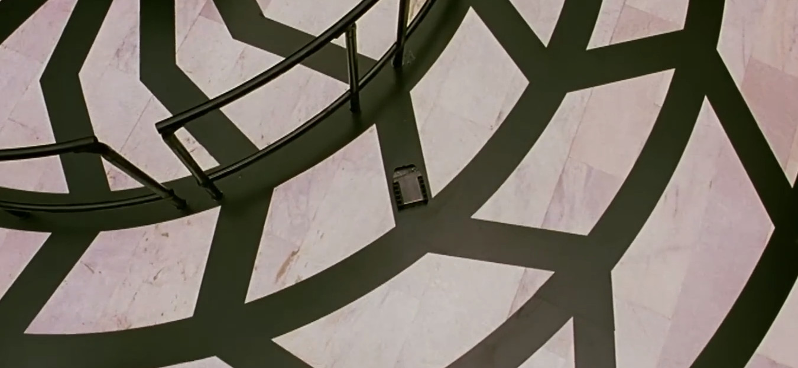
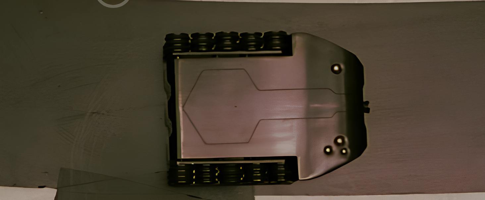
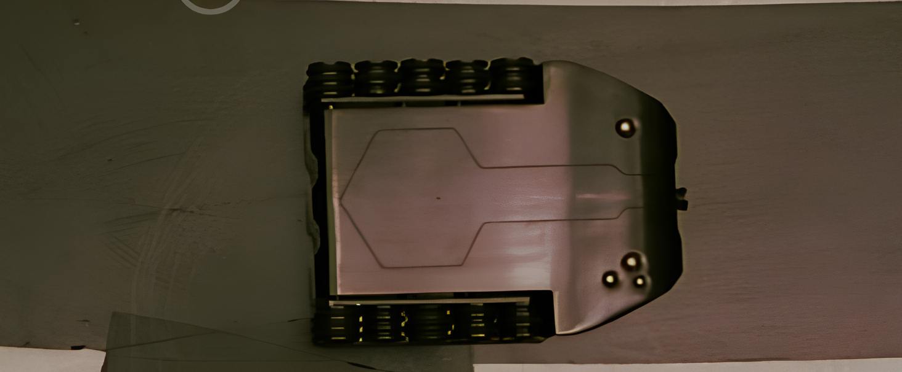
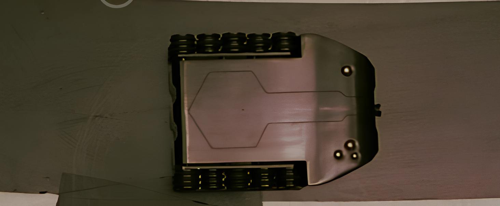
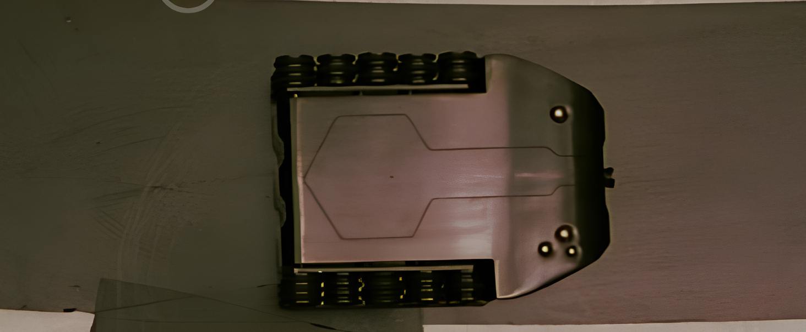

 


If you’re a millennial kid who grew up loving the first Dhoom movie. You know firsthand how grand the experience was to watch Dhoom 2. The high-tech gadgets, the famous diamond robbery - it was one of the best Bollywood sci-fi tech movies of its time. I was just 10 years old back then.
Fast forward to 2026. Twenty years later, I think it’s finally time to build the car replica, to relive the nostalgia and have some fun.
We’ve all seen the craze around Iron Man suits and the 90s trend of Batmobile builds among young engineers. Movie-inspired projects have become a way to turn childhood inspiration into real-world creations.This is my take on bringing a bit of that movie magic to life.
So, let’s begin. Cue “ta na na na na na na na na”
I’ve been working on this project for a year now. It seemed simple at first, but once you get down to the details, things become far more trickier. This is why plan first, define the scope as early as possible.
In the movie, most of the props are created using a mix of CGI and practical effects, so it’s important to figure out what can be built practically. In the case of the Dhoom 2 car, I found that recreating the car’s design, adding a camera, and implementing the iris-opening mechanism are all doable.
However, there are a few limitations. Features like the arm popping out (even though vacuum robots come with arms now[1]) and the car climbing over the diamond podium aren’t realistically achievable for this build. They’re CG in the movie anyway.
When planning a project like this, you need to decide what you really want from it. Is it mainly about getting the look right, or do you also want real mechanical and electronic functionality? With movie props, appearance alone already takes up most of the effort. Matching what was shown on screen is easily the major challenge. Once that direction is clear, you can optimize the rest of the build around it.
So, with all that in mind, I decided to build following things since they’re enough to film a sequence shown in the movie.
In the movie, the car prop is used in the famous diamond robbery scene where the thief uses an RC car to steal a diamond from the museum. Here’s the link to refresh your memory
The car’s design is surprisingly practical. Apart from the obvious CGI elements, most of its features felt plausible enough to attempt recreating practically.
First task is to estimate the dimensions of the car. Its tricky to do that because the perceived dimension will change based on the camera angle and distance.

Luckily, In one of the scene, they show the camera 35mm film beside the opened car. Since we know tts a 35mm film, we can measure how many pixels are the film and based on that guess the car dims. Its not accurate but enough to give us the ball park. I did this in fusion 360 by importing image as canvas. This can also be done using OpenCV.